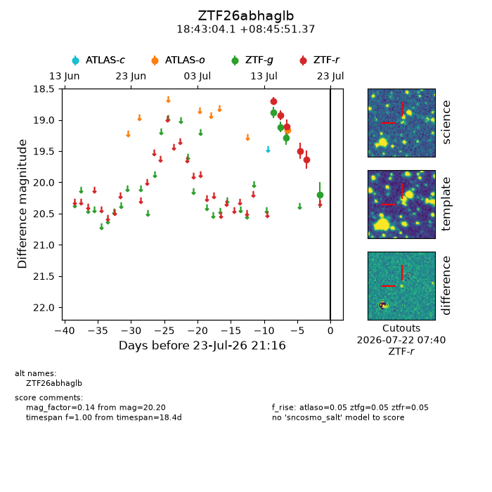
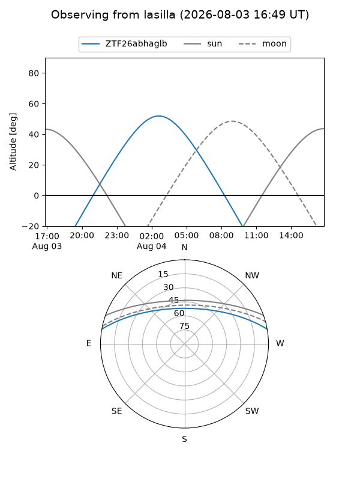
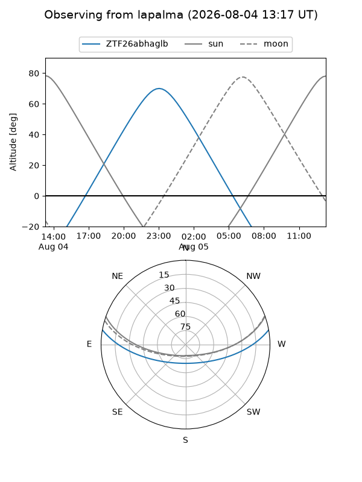
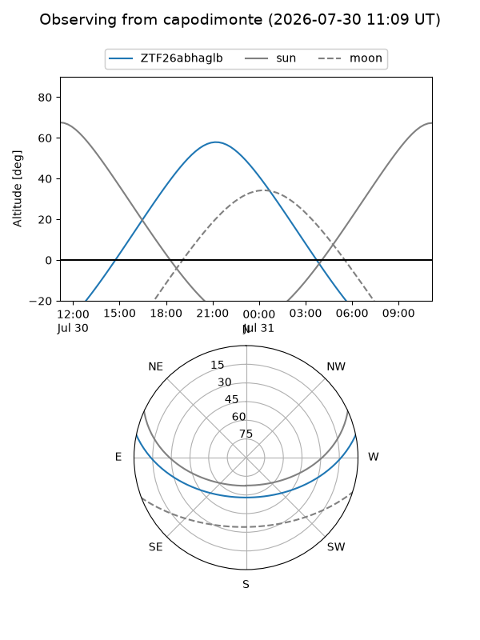
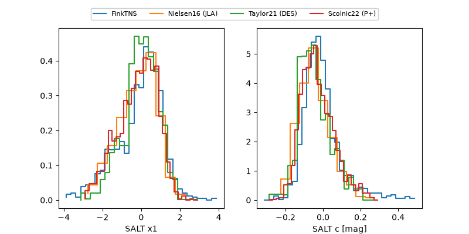

ZTF26abhaglb
Target ZTF26abhaglb at 2026-07-23 21:19
Aliases and brokers:
FINK-ZTF: ztf.fink-portal.org/ZTF26abhaglb
Lasair-ZTF: lasair-ztf.lsst.ac.uk/objects/ZTF26abhaglb
ALeRCE-ZTF: alerce.online/object/ZTF26abhaglb
Direct TNS query: direct search
alt names
ZTF26abhaglb (ztf,fink_ztf)
Coordinates:
equatorial (ra, dec) = 280.7671,+8.76427
equatorial (HMS+DMS) = 18:43:04.10,+08:45:51.37
galactic (l, b) = (39.8109,+5.83090)
Flags:
Photometry:
last atlaso=19.17, ztfg=20.20, ztfr=19.63
2 atlaso, 4 ztfg, 5 ztfr detections
Lightcurve

Visibility



Additional plots
